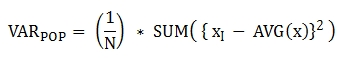

집계/분석 함수¶
Contents
개요¶
집계/분석 함수는 데이터를 분석하여 어떤 결과를 추출하고자 할 때 사용하는 함수이다.
집계 함수는 그룹 별로 그룹핑된 결과를 리턴하며, 그룹핑 대상이 되는 칼럼만 출력한다.
분석 함수는 그룹 별로 그룹핑된 결과를 리턴하되, 그룹핑되지 않은 칼럼을 포함하여 하나의 그룹에 대해 여러 개의 행을 출력할 수 있다.
예를 들어 집계/분석 함수는 다음과 같은 질문에 대한 답을 구하기 위해 사용될 수 있다.
연도별 총 판매 금액은 어떻게 되는가?
연도별로 그룹지어 가장 판매 금액이 높은 월부터 순서대로 출력하려면 어떻게 하는가?
연도별로 그룹지어 연도별, 월별 순서대로 누적 판매 금액을 출력하려면 어떻게 하는가?
1.은 집계 함수로 답을 구할 수 있으며, 2., 3.은 분석 함수로 답을 구할 수 있다. 위의 질문들은 다음의 SQL문으로 작성될 수 있다.
다음은 각 년도의 월별 판매 금액을 저장하고 있는 테이블이다.
CREATE TABLE sales_mon_tbl (
yyyy INT,
mm INT,
sales_sum INT
);
INSERT INTO sales_mon_tbl VALUES
(2000, 1, 1000), (2000, 2, 770), (2000, 3, 630), (2000, 4, 890),
(2000, 5, 500), (2000, 6, 900), (2000, 7, 1300), (2000, 8, 1800),
(2000, 9, 2100), (2000, 10, 1300), (2000, 11, 1500), (2000, 12, 1610),
(2001, 1, 1010), (2001, 2, 700), (2001, 3, 600), (2001, 4, 900),
(2001, 5, 1200), (2001, 6, 1400), (2001, 7, 1700), (2001, 8, 1110),
(2001, 9, 970), (2001, 10, 690), (2001, 11, 710), (2001, 12, 880),
(2002, 1, 980), (2002, 2, 750), (2002, 3, 730), (2002, 4, 980),
(2002, 5, 1110), (2002, 6, 570), (2002, 7, 1630), (2002, 8, 1890),
(2002, 9, 2120), (2002, 10, 970), (2002, 11, 420), (2002, 12, 1300);
연도별 총 판매 금액은 어떻게 되는가?
SELECT yyyy, sum(sales_sum)
FROM sales_mon_tbl
GROUP BY yyyy;
yyyy sum(sales_sum)
=============================
2000 14300
2001 11870
2002 13450
연도별로 그룹지어 가장 판매 금액이 높은 월부터 순서대로 출력하려면 어떻게 하는가?
SELECT yyyy, mm, sales_sum, RANK() OVER (PARTITION BY yyyy ORDER BY sales_sum DESC) AS rnk
FROM sales_mon_tbl;
yyyy mm sales_sum rnk
====================================================
2000 9 2100 1
2000 8 1800 2
2000 12 1610 3
2000 11 1500 4
2000 7 1300 5
2000 10 1300 5
2000 1 1000 7
2000 6 900 8
2000 4 890 9
2000 2 770 10
2000 3 630 11
2000 5 500 12
2001 7 1700 1
2001 6 1400 2
2001 5 1200 3
2001 8 1110 4
2001 1 1010 5
2001 9 970 6
2001 4 900 7
2001 12 880 8
2001 11 710 9
2001 2 700 10
2001 10 690 11
2001 3 600 12
2002 9 2120 1
2002 8 1890 2
2002 7 1630 3
2002 12 1300 4
2002 5 1110 5
2002 1 980 6
2002 4 980 6
2002 10 970 8
2002 2 750 9
2002 3 730 10
2002 6 570 11
2002 11 420 12
연도별로 그룹지어 연도별, 월별 순서대로 누적 판매 금액을 출력하려면 어떻게 하는가?
SELECT yyyy, mm, sales_sum, SUM(sales_sum) OVER (PARTITION BY yyyy ORDER BY yyyy, mm) AS a_sum
FROM sales_mon_tbl;
yyyy mm sales_sum a_sum
====================================================
2000 1 1000 1000
2000 2 770 1770
2000 3 630 2400
2000 4 890 3290
2000 5 500 3790
2000 6 900 4690
2000 7 1300 5990
2000 8 1800 7790
2000 9 2100 9890
2000 10 1300 11190
2000 11 1500 12690
2000 12 1610 14300
2001 1 1010 1010
2001 2 700 1710
2001 3 600 2310
2001 4 900 3210
2001 5 1200 4410
2001 6 1400 5810
2001 7 1700 7510
2001 8 1110 8620
2001 9 970 9590
2001 10 690 10280
2001 11 710 10990
2001 12 880 11870
2002 1 980 980
2002 2 750 1730
2002 3 730 2460
2002 4 980 3440
2002 5 1110 4550
2002 6 570 5120
2002 7 1630 6750
2002 8 1890 8640
2002 9 2120 10760
2002 10 970 11730
2002 11 420 12150
2002 12 1300 13450
집계 함수와 분석 함수 비교¶
집계 함수(aggregate functions)는 행들의 그룹에 기반하여 각 그룹 당 하나의 결과를 반환한다. GROUP BY 절을 포함하면 각 그룹마다 한 행의 집계 결과를 반환한다. GROUP BY 절을 생략하면 전체 행에 대해 한 행의 집계 결과를 반환한다. HAVING 절은 GROUP BY 절이 있는 질의에 조건을 추가할 때 사용한다.
대부분의 집계 함수는 DISTINCT, UNIQUE 제약 조건을 사용할 수 있다. GROUP BY … HAVING 절에 대해서는 GROUP BY … HAVING 절 을 참고한다.
분석 함수(analytic functions)는 행들의 결과에 기반하여 집계 값을 계산한다. 분석 함수는 OVER 절 뒤의 <partition_by_clause>에 의해 지정된 그룹들(이 절이 생략되면 모든 행을 하나의 그룹으로 봄)을 기준으로 한 개 이상의 행을 반환할 수 있다는 점에서 집계 함수와 다르다.
분석 함수는 특정 행 집합에 대해 다양한 통계를 허용하기 위해 기존의 집계 함수들 일부에 OVER 라는 새로운 분석 절이 함께 사용된다.
function_name ([<argument_list>]) OVER (<analytic_clause>)
<analytic_clause>::=
[<partition_by_clause>] [<order_by_clause>]
<partition_by_clause>::=
PARTITION BY value_expr[, value_expr]...
<order_by_clause>::=
ORDER BY { expression | position | column_alias } [ ASC | DESC ]
[, { expression | position | column_alias } [ ASC | DESC ] ] ...
<partition_by_clause>: 하나 이상의 value_expr 에 기반한 그룹들로, 질의 결과를 분할하기 위해 PARTITION BY 절을 사용한다.
<order_by_clause>: <partition_by_clause>에 의한 분할(partition) 내에서 데이터의 정렬 방식을 명시한다. 여러 개의 키로 정렬할 수 있다. <partition_by_clause>가 생략될 경우 전체 결과 셋 내에서 데이터를 정렬한다. 정렬된 순서에 의해 앞의 값을 포함하여 누적한 레코드의 칼럼 값을 대상으로 함수를 적용하여 계산한다.
분석 함수의 OVER 절 뒤에 함께 사용되는 ORDER BY/PARTITION BY 절의 표현식에 따른 동작 방식은 다음과 같다.
ORDER BY/PARTITION BY <상수가 아닌 표현식> (예: i, sin(i+1)): 표현식은 정렬/분할(ordering/partitioning)에 사용됨.
ORDER BY/PARTITION BY <상수> (예: 1): 상수는 SELECT 리스트의 칼럼 위치로 간주됨.
ORDER BY/PARTITION BY <상수 표현식> (예: 1+0): 상수 표현식은 무시되어, 정렬/분할(ordering/partitioning)에 사용되지 않음.
OVER 함수 내에 “ORDER BY” 절을 명시해야 하는 분석 함수¶
다음 분석 함수들은 순서가 필요하므로 OVER 함수 내에 “ORDER BY” 절을 명시해야 하는 분석 함수들이다. “ORDER BY” 절이 생략되는 경우 오류가 발생하거나 출력 결과에 대해 정확한 순서를 보장하지 않는다는 점에 주의한다.
AVG¶
-
AVG([ DISTINCT | DISTINCTROW | UNIQUE | ALL ] expression)¶
-
AVG([ DISTINCT | DISTINCTROW | UNIQUE | ALL ] expression) OVER (<analytic_clause>) AVG 함수는 집계 함수 또는 분석 함수로 사용되며, 모든 행에 대한 연산식 값의 산술 평균을 구한다. 하나의 연산식 expression 만 인자로 지정되며, 연산식 앞에 DISTINCT 또는 UNIQUE 키워드를 포함시키면 연산식 값 중 중복을 제거한 후 평균을 구하고, 키워드가 생략되거나 ALL 인 경우에는 모든 값에 대해서 평균을 구한다.
- Parameters
expression – 수치 값을 반환하는 임의의 연산식을 지정한다. 컬렉션 타입의 데이터를 반환하는 연산식은 지정될 수 없다.
ALL – 모든 값에 대해 평균을 구하기 위해 사용되며, 기본값이다.
DISTINCT,DISTINCTROW,UNIQUE – 중복이 제거된 유일한 값에 대해서만 평균을 구하기 위해 사용된다.
- Return type
DOUBLE
다음은 demodb 에서 한국이 획득한 금메달의 평균 수를 반환하는 예제이다.
SELECT AVG(gold)
FROM participant
WHERE nation_code = 'KOR';
avg(gold)
==========================
9.600000000000000e+00
다음은 demodb 에서 nation_code가 ‘AU’로 시작하는 국가에 대해 연도 별로 획득한 금메달 수와 해당 연도까지의 금메달 누적에 대한 평균 합계를 출력하는 예제이다.
SELECT host_year, nation_code, gold,
AVG(gold) OVER (PARTITION BY nation_code ORDER BY host_year) avg_gold
FROM participant WHERE nation_code like 'AU%';
host_year nation_code gold avg_gold
=======================================================================
1988 'AUS' 3 3.000000000000000e+00
1992 'AUS' 7 5.000000000000000e+00
1996 'AUS' 9 6.333333333333333e+00
2000 'AUS' 16 8.750000000000000e+00
2004 'AUS' 17 1.040000000000000e+01
1988 'AUT' 1 1.000000000000000e+00
1992 'AUT' 0 5.000000000000000e-01
1996 'AUT' 0 3.333333333333333e-01
2000 'AUT' 2 7.500000000000000e-01
2004 'AUT' 2 1.000000000000000e+00
다음은 위 예제에서 OVER 분석 절 이하의 “ORDER BY host_year” 절을 제거한 것으로, avg_gold의 값은 모든 연도의 금메달 평균으로 nation_code별로 각 연도에서 모두 같은 값을 가진다.
SELECT host_year, nation_code, gold, AVG(gold) OVER (PARTITION BY nation_code) avg_gold
FROM participant WHERE nation_code LIKE 'AU%';
host_year nation_code gold avg_gold
==========================================================================
2004 'AUS' 17 1.040000000000000e+01
2000 'AUS' 16 1.040000000000000e+01
1996 'AUS' 9 1.040000000000000e+01
1992 'AUS' 7 1.040000000000000e+01
1988 'AUS' 3 1.040000000000000e+01
2004 'AUT' 2 1.000000000000000e+00
2000 'AUT' 2 1.000000000000000e+00
1996 'AUT' 0 1.000000000000000e+00
1992 'AUT' 0 1.000000000000000e+00
1988 'AUT' 1 1.000000000000000e+00
COUNT¶
-
COUNT(*)¶
-
COUNT(*) OVER (<analytic_clause>)
-
COUNT([DISTINCT | DISTINCTROW | UNIQUE | ALL] expression)
-
COUNT([DISTINCT | DISTINCTROW | UNIQUE | ALL] expression) OVER (<analytic_clause>) COUNT 함수는 집계 함수 또는 분석 함수로 사용되며, 질의문이 반환하는 결과 행들의 개수를 반환한다. 별표(*)를 지정하면 조건을 만족하는 모든 행(NULL 값을 가지는 행 포함)의 개수를 반환하며, DISTINCT 또는 UNIQUE 키워드를 연산식 앞에 지정하면 중복을 제거한 후 유일한 값을 가지는 행(NULL 값을 가지는 행은 포함하지 않음)의 개수만 반환한다. 따라서, 반환되는 값은 항상 정수이며, NULL 은 반환되지 않는다.
- Parameters
expression – 임의의 연산식이다.
ALL – 주어진 expression의 모든 행의 개수를 구하기 위해 사용되며, 기본값이다.
DISTINCT,DISTINCTROW,UNIQUE – 중복이 제거된 유일한 값을 가지는 행의 개수를 구하기 위해 사용된다.
- Return type
INT
연산식 expression 은 수치형 또는 문자열 타입은 물론, 컬렉션 타입 칼럼과 오브젝트 도메인(사용자 정의 클래스)을 가지는 칼럼도 지정될 수 있다.
다음은 demodb 에서 역대 올림픽 중에서 마스코트가 존재했었던 올림픽의 수를 반환하는 예제이다.
SELECT COUNT(*)
FROM olympic
WHERE mascot IS NOT NULL;
count(*)
=============
9
다음은 demodb 에서 nation_code가 ‘AUT’인 국가의 참가 선수의 종목(event)별 인원 수를 종목이 바뀔 때마다 누적하여 출력한 예제이다. 가장 마지막 줄에는 모든 인원 수가 출력된다.
SELECT nation_code, event, name, COUNT(*) OVER (ORDER BY event) co
FROM athlete WHERE nation_code='AUT';
nation_code event name co
===============================================================================
'AUT' 'Athletics' 'Kiesl Theresia' 2
'AUT' 'Athletics' 'Graf Stephanie' 2
'AUT' 'Equestrian' 'Boor Boris' 6
'AUT' 'Equestrian' 'Fruhmann Thomas' 6
'AUT' 'Equestrian' 'Munzner Joerg' 6
'AUT' 'Equestrian' 'Simon Hugo' 6
'AUT' 'Judo' 'Heill Claudia' 9
'AUT' 'Judo' 'Seisenbacher Peter' 9
'AUT' 'Judo' 'Hartl Roswitha' 9
'AUT' 'Rowing' 'Jonke Arnold' 11
'AUT' 'Rowing' 'Zerbst Christoph' 11
'AUT' 'Sailing' 'Hagara Roman' 15
'AUT' 'Sailing' 'Steinacher Hans Peter' 15
'AUT' 'Sailing' 'Sieber Christoph' 15
'AUT' 'Sailing' 'Geritzer Andreas' 15
'AUT' 'Shooting' 'Waibel Wolfram Jr.' 17
'AUT' 'Shooting' 'Planer Christian' 17
'AUT' 'Swimming' 'Rogan Markus' 18
CUME_DIST¶
-
CUME_DIST(expression[, expression] ...) WITHIN GROUP (<order_by_clause>)¶
-
CUME_DIST() OVER ([<partition_by_clause>] <order_by_clause>) CUME_DIST 함수는 집계 함수 또는 분석 함수로 사용되며, 그룹의 값 내에서 명시한 값의 누적 분포 값을 반환한다. CUME_DIST에 의해 반환되는 값의 범위는 0보다 크고 1보다 작거나 같다. 같은 값의 입력 인자에 대한 CUME_DIST 함수의 반환 값은 항상 같은 누적 분포 값으로 평가된다.
- Parameters
expression – 수치 또는 문자열을 반환하는 연산식. 칼럼이 올 수 없다.
order_by_clause – ORDER BY 절 뒤에 오는 칼럼 이름은 expression 개수만큼 매핑되어야 한다.
- Return type
DOUBLE
See also
집계 함수인 경우, CUME_DIST 함수는 ORDER BY 절에 명시된 순서로 정렬한 후, 집계 그룹에 있는 행에서 가상(hypothetical) 행의 상대적인 위치를 반환한다. 이때, 가상 행이 새로 입력되는 것으로 간주하고 위치를 계산한다. 즉, (“어떤 행의 누적된 RANK” + 1)/(“집계 그룹 전체 행의 개수” + 1)을 반환한다.
분석 함수인 경우, PARTITION BY에 의해 나누어진 그룹별로 각 행을 ORDER BY 절에 명시된 순서로 정렬한 후 그룹 내 값의 상대적인 위치를 반환한다. 상대적인 위치는 입력 인자 값보다 작거나 같은 값을 가진 행의 개수를 그룹 내 총 행(partition_by_clause에 의해 그룹핑된 행 또는 전체 행)의 개수로 나눈 것이다. 즉, (어떤 행의 누적된 RANK)/(그룹 내 행의 개수)를 반환한다. 예를 들어, 전체 10개의 행 중에서 RANK가 1인 행의 개수가 2개이면 첫번째 행과 두번째 행의 CUME_DUST 값은 “2/10 = 0.2”가 된다.
다음은 이 함수의 예에서 사용될 스키마 및 데이터이다.
CREATE TABLE scores(id INT PRIMARY KEY AUTO_INCREMENT, math INT, english INT, pe CHAR, grade INT);
INSERT INTO scores(math, english, pe, grade)
VALUES(60, 70, 'A', 1),
(60, 70, 'A', 1),
(60, 80, 'A', 1),
(60, 70, 'B', 1),
(70, 60, 'A', 1) ,
(70, 70, 'A', 1) ,
(80, 70, 'C', 1) ,
(70, 80, 'C', 1),
(85, 60, 'C', 1),
(75, 90, 'B', 1);
INSERT INTO scores(math, english, pe, grade)
VALUES(95, 90, 'A', 2),
(85, 95, 'B', 2),
(95, 90, 'A', 2),
(85, 95, 'B', 2),
(75, 80, 'D', 2),
(75, 85, 'D', 2),
(75, 70, 'C', 2),
(65, 95, 'A', 2),
(65, 95, 'A', 2),
(65, 95, 'A', 2);
다음은 집계 함수로 사용되는 예로, math, english, pe 3개의 칼럼에 대한 각각의 누적 분포 값을 더해 3으로 나눈 결과를 출력한다.
SELECT CUME_DIST(60, 70, 'D')
WITHIN GROUP(ORDER BY math, english, pe) AS cume
FROM scores;
1.904761904761905e-01
다음은 분석 함수로 사용되는 예로, math, english, pe 3개 칼럼을 기준으로 각 행의 누적 분포를 출력한다.
SELECT id, math, english, pe, grade, CUME_DIST() OVER(ORDER BY math, english, pe) AS cume_dist
FROM scores
ORDER BY cume_dist;
id math english pe grade cume_dist
====================================================================================================
1 60 70 'A' 1 1.000000000000000e-01
2 60 70 'A' 1 1.000000000000000e-01
4 60 70 'B' 1 1.500000000000000e-01
3 60 80 'A' 1 2.000000000000000e-01
18 65 95 'A' 2 3.500000000000000e-01
19 65 95 'A' 2 3.500000000000000e-01
20 65 95 'A' 2 3.500000000000000e-01
5 70 60 'A' 1 4.000000000000000e-01
6 70 70 'A' 1 4.500000000000000e-01
8 70 80 'C' 1 5.000000000000000e-01
17 75 70 'C' 2 5.500000000000000e-01
15 75 80 'D' 2 6.000000000000000e-01
16 75 85 'D' 2 6.500000000000000e-01
10 75 90 'B' 1 7.000000000000000e-01
7 80 70 'C' 1 7.500000000000000e-01
9 85 60 'C' 1 8.000000000000000e-01
12 85 95 'B' 2 9.000000000000000e-01
14 85 95 'B' 2 9.000000000000000e-01
11 95 90 'A' 2 1.000000000000000e+00
13 95 90 'A' 2 1.000000000000000e+00
다음은 분석 함수로 사용되는 예로, math, english, pe 3개 칼럼을 기준으로 grade 칼럼으로 그룹핑하여 각 행의 누적 분포를 출력한다.
SELECT id, math, english, pe, grade, CUME_DIST() OVER(PARTITION BY grade ORDER BY math, english, pe) AS cume_dist
FROM scores
ORDER BY grade, cume_dist;
id math english pe grade cume_dist
============================================================================================
1 60 70 'A' 1 2.000000000000000e-01
2 60 70 'A' 1 2.000000000000000e-01
4 60 70 'B' 1 3.000000000000000e-01
3 60 80 'A' 1 4.000000000000000e-01
5 70 60 'A' 1 5.000000000000000e-01
6 70 70 'A' 1 6.000000000000000e-01
8 70 80 'C' 1 7.000000000000000e-01
10 75 90 'B' 1 8.000000000000000e-01
7 80 70 'C' 1 9.000000000000000e-01
9 85 60 'C' 1 1.000000000000000e+00
18 65 95 'A' 2 3.000000000000000e-01
19 65 95 'A' 2 3.000000000000000e-01
20 65 95 'A' 2 3.000000000000000e-01
17 75 70 'C' 2 4.000000000000000e-01
15 75 80 'D' 2 5.000000000000000e-01
16 75 85 'D' 2 6.000000000000000e-01
12 85 95 'B' 2 8.000000000000000e-01
14 85 95 'B' 2 8.000000000000000e-01
11 95 90 'A' 2 1.000000000000000e+00
13 95 90 'A' 2 1.000000000000000e+00
위의 결과에서 id가 1인 행은 grade가 1인 10개의 행 중에서 첫번째와 두번째에 위치하며, CUME_DUST의 값은 2/10, 즉 0.2가 된다.
id가 5인 행은 grade가 1인 10개의 행 중에서 다섯번째에 위치하며, CUME_DUST의 값은 5/10, 즉 0.5가 된다.
DENSE_RANK¶
-
DENSE_RANK() OVER ([<partition_by_clause>] <order_by_clause>)¶ DENSE_RANK 함수는 분석 함수로만 사용되며, PARTITION BY 절에 의한 칼럼 값의 그룹에서 값의 순위를 계산하여 INTEGER 로 출력한다. 공동 순위가 존재해도 그 다음 순위는 1을 더한다. 예를 들어, 13위에 해당하는 행이 3개여도 그 다음 행의 순위는 16위가 아니라 14위가 된다. 반면,
RANK()함수는 이와 달리 공동 순위의 개수만큼을 더해 다음 순위의 값을 계산한다.- Return type
INT
다음은 역대 올림픽에서 연도별로 금메달을 많이 획득한 국가의 금메달 개수와 순위를 출력하는 예제이다. 공동 순위의 개수는 무시하고 다음 순위 값은 항상 1을 더한다.
SELECT host_year, nation_code, gold,
DENSE_RANK() OVER (PARTITION BY host_year ORDER BY gold DESC) AS d_rank
FROM participant;
host_year nation_code gold d_rank
=============================================================
1988 'URS' 55 1
1988 'GDR' 37 2
1988 'USA' 36 3
1988 'KOR' 12 4
1988 'HUN' 11 5
1988 'FRG' 11 5
1988 'BUL' 10 6
1988 'ROU' 7 7
1988 'ITA' 6 8
1988 'FRA' 6 8
1988 'KEN' 5 9
1988 'GBR' 5 9
1988 'CHN' 5 9
...
1988 'CHI' 0 14
1988 'ARG' 0 14
1988 'JAM' 0 14
1988 'SUI' 0 14
1988 'SWE' 0 14
1992 'EUN' 45 1
1992 'USA' 37 2
1992 'GER' 33 3
...
2000 'RSA' 0 15
2000 'NGR' 0 15
2000 'JAM' 0 15
2000 'BRA' 0 15
2004 'USA' 36 1
2004 'CHN' 32 2
2004 'RUS' 27 3
2004 'AUS' 17 4
2004 'JPN' 16 5
2004 'GER' 13 6
2004 'FRA' 11 7
2004 'ITA' 10 8
2004 'UKR' 9 9
2004 'CUB' 9 9
2004 'GBR' 9 9
2004 'KOR' 9 9
...
2004 'EST' 0 17
2004 'SLO' 0 17
2004 'SCG' 0 17
2004 'FIN' 0 17
2004 'POR' 0 17
2004 'MEX' 0 17
2004 'LAT' 0 17
2004 'PRK' 0 17
FIRST_VALUE¶
-
FIRST_VALUE(expression) [{RESPECT|IGNORE} NULLS] OVER (<analytic_clause>)¶ FIRST_VALUE 함수는 분석 함수로만 사용되며, 정렬된 값 집합에서 첫번째 값을 반환한다. 집합 내의 첫번째 값이 null이면 함수는 NULL을 반환한다. 그러나, IGNORE NULLS를 명시하면 집합 내에서 null이 아닌 첫번째 값을 반환하거나, 모든 값이 null인 경우 NULL을 반환한다.
- Parameters
expression – 수치 또는 문자열을 반환하는 칼럼 또는 연산식. FIRST_VALUE 함수 또는 다른 분석 함수를 포함할 수 없다.
- Return type
expression의 타입
See also
다음은 예제 질의를 실행하기 위한 스키마와 데이터이다.
CREATE TABLE test_tbl(groupid int,itemno int);
INSERT INTO test_tbl VALUES(1,null);
INSERT INTO test_tbl VALUES(1,null);
INSERT INTO test_tbl VALUES(1,1);
INSERT INTO test_tbl VALUES(1,null);
INSERT INTO test_tbl VALUES(1,2);
INSERT INTO test_tbl VALUES(1,3);
INSERT INTO test_tbl VALUES(1,4);
INSERT INTO test_tbl VALUES(1,5);
INSERT INTO test_tbl VALUES(2,null);
INSERT INTO test_tbl VALUES(2,null);
INSERT INTO test_tbl VALUES(2,null);
INSERT INTO test_tbl VALUES(2,6);
INSERT INTO test_tbl VALUES(2,7);
다음은 FIRST_VALUE 함수를 수행하는 질의 및 결과이다.
SELECT groupid, itemno, FIRST_VALUE(itemno) OVER(PARTITION BY groupid ORDER BY itemno) AS ret_val
FROM test_tbl;
groupid itemno ret_val
=======================================
1 NULL NULL
1 NULL NULL
1 NULL NULL
1 1 NULL
1 2 NULL
1 3 NULL
1 4 NULL
1 5 NULL
2 NULL NULL
2 NULL NULL
2 NULL NULL
2 6 NULL
2 7 NULL
Note
CUBRID는 NULL 값을 모든 값보다 앞의 순서로 정렬한다. 즉, 아래의 SQL1은 ORDER BY 절에 NULLS FIRST가 포함된 SQL2로 해석된다.
SQL1: FIRST_VALUE(itemno) OVER(PARTITION BY groupid ORDER BY itemno) AS ret_val
SQL2: FIRST_VALUE(itemno) OVER(PARTITION BY groupid ORDER BY itemno NULLS FIRST) AS ret_val
다음은 IGNORE NULLS를 명시하는 예이다.
SELECT groupid, itemno, FIRST_VALUE(itemno) IGNORE NULLS OVER(PARTITION BY groupid ORDER BY itemno) AS ret_val
FROM test_tbl;
groupid itemno ret_val
=======================================
1 NULL NULL
1 NULL NULL
1 NULL NULL
1 1 1
1 2 1
1 3 1
1 4 1
1 5 1
2 NULL NULL
2 NULL NULL
2 NULL NULL
2 6 6
2 7 6
GROUP_CONCAT¶
-
GROUP_CONCAT([DISTINCT] expression [ORDER BY {column | unsigned_int} [ASC | DESC]] [SEPARATOR str_val])¶ GROUP_CONCAT 함수는 집계 함수로만 사용되며, 그룹에서 NULL 이 아닌 값들을 연결하여 결과 문자열을 VARCHAR 타입으로 반환한다. 질의 결과 행이 없거나 NULL 값만 있으면 NULL 을 반환한다.
- Parameters
expression – 수치 또는 문자열을 반환하는 칼럼 또는 연산식
str_val – 구분자로 쓰일 문자열
DISTINCT – 결과에서 중복되는 값을 제거한다.
ORDERBY – 결과 값의 순서를 지정한다.
SEPARATOR – 결과 값 사이에 구분할 구분자를 지정한다. 생략하면 기본값인 쉼표(,)를 구분자로 사용한다.
- Return type
STRING
리턴 값의 최대 크기는 시스템 파라미터 group_concat_max_len 의 설정을 따른다. 기본값은 1024 바이트이며, 최소값은 4바이트, 최대값은 33,554,432바이트이다.
이 함수는 string_max_size_bytes 파라미터의 영향을 받는데, group_concat_max_len의 값이 string_max_size_bytes의 값보다 크고 GROUP_CONCAT 함수의 결과가 string_max_size_bytes의 크기 제한을 넘으면 오류가 반환된다.
중복되는 값을 제거하려면 DISTINCT 절을 사용하면 된다. 그룹 결과의 값 사이에 사용되는 기본 구분자는 쉼표(,)이며, 구분자를 명시적으로 표현하려면 SEPARATOR 절과 그 뒤에 구분자로 사용할 문자열을 추가한다. 구분자를 제거하려면 SEPARATOR 절 뒤에 빈 문자열(empty string)을 입력한다.
결과 문자열에 문자형 데이터 타입이 아닌 다른 타입이 전달되면, 에러를 반환한다.
GROUP_CONCAT 함수를 사용하려면 다음의 조건을 만족해야 한다.
입력 인자로 하나의 표현식(또는 칼럼)만 허용한다.
ORDER BY 를 이용한 정렬은 오직 인자로 사용되는 표현식(또는 칼럼)에 의해서만 가능하다.
구분자로 사용되는 문자열은 문자형 타입만 허용하며, 다른 타입은 허용하지 않는다.
SELECT GROUP_CONCAT(s_name) FROM code;
group_concat(s_name)
======================
'X,W,M,B,S,G'
SELECT GROUP_CONCAT(s_name ORDER BY s_name SEPARATOR ':') FROM code;
group_concat(s_name order by s_name separator ':')
======================
'B:G:M:S:W:X'
CREATE TABLE t(i int);
INSERT INTO t VALUES (4),(2),(3),(6),(1),(5);
SELECT GROUP_CONCAT(i*2+1 ORDER BY 1 SEPARATOR '') FROM t;
group_concat(i*2+1 order by 1 separator '')
======================
'35791113'
LAG¶
-
LAG(expression[, offset[, default]]) OVER ([<partition_by_clause>] <order_by_clause>)¶ LAG 함수는 분석 함수로만 사용되며 현재 행을 기준으로 offset 앞 행의 expression 값을 반환한다. 한 행에 자체 조인(self join) 없이 동시에 여러 개의 행에 접근하고 싶을 때 사용할 수 있다.
- Parameters
expression – 숫자 또는 문자열을 반환하는 칼럼 또는 연산식
offset – 오프셋 위치를 나타내는 정수. 생략 시 기본값 1
default – 현재 위치에서 offset 앞에 위치한 expression 값이 NULL인 경우 출력하는 값. 기본값 NULL
- Return type
NUMBER or STRING
다음은 사번 순으로 정렬하여 같은 행에 앞의 사번을 같이 출력하는 예이다.
CREATE TABLE t_emp (name VARCHAR(10), empno INT);
INSERT INTO t_emp VALUES
('Amie', 11011),
('Jane', 13077),
('Lora', 12045),
('James', 12006),
('Peter', 14006),
('Tom', 12786),
('Ralph', 23518),
('David', 55);
SELECT name, empno, LAG (empno, 1) OVER (ORDER BY empno) prev_empno
FROM t_emp;
name empno prev_empno
================================================
'David' 55 NULL
'Amie' 11011 55
'James' 12006 11011
'Lora' 12045 12006
'Tom' 12786 12045
'Jane' 13077 12786
'Peter' 14006 13077
'Ralph' 23518 14006
이와는 반대로, 현재 행을 기준으로 offset 이후 행의 expression 값을 반환하는 LEAD() 함수를 참고한다.
LAST_VALUE¶
-
LAST_VALUE(expression) [{RESPECT|IGNORE} NULLS] OVER (<analytic_clause>)¶ LAST_VALUE 함수는 분석 함수로만 사용되며, 정렬된 값 집합에서 마지막 값을 반환한다. 집합 내의 마지막 값이 null이면 함수는 NULL을 반환한다. 그러나, IGNORE NULLS를 명시하면 집합 내에서 null이 아닌 마지막 값을 반환하거나, 모든 값이 null인 경우 NULL을 반환한다.
- Parameters
expression – 수치 또는 문자열을 반환하는 칼럼 또는 연산식. LAST_VALUE 함수 또는 다른 분석 함수를 포함할 수 없다.
- Return type
expression의 타입
See also
다음은 예제 질의를 실행하기 위한 스키마와 데이터이다.
CREATE TABLE test_tbl(groupid int,itemno int);
INSERT INTO test_tbl VALUES(1,null);
INSERT INTO test_tbl VALUES(1,null);
INSERT INTO test_tbl VALUES(1,1);
INSERT INTO test_tbl VALUES(1,null);
INSERT INTO test_tbl VALUES(1,2);
INSERT INTO test_tbl VALUES(1,3);
INSERT INTO test_tbl VALUES(1,4);
INSERT INTO test_tbl VALUES(1,5);
INSERT INTO test_tbl VALUES(2,null);
INSERT INTO test_tbl VALUES(2,null);
INSERT INTO test_tbl VALUES(2,null);
INSERT INTO test_tbl VALUES(2,6);
INSERT INTO test_tbl VALUES(2,7);
다음은 LAST_VALUE 함수를 수행하는 질의 및 결과이다.
SELECT groupid, itemno, LAST_VALUE(itemno) OVER(PARTITION BY groupid ORDER BY itemno) AS ret_val
FROM test_tbl;
groupid itemno ret_val
=======================================
1 NULL NULL
1 NULL NULL
1 NULL NULL
1 1 1
1 2 2
1 3 3
1 4 4
1 5 5
2 NULL NULL
2 NULL NULL
2 NULL NULL
2 6 6
2 7 7
LAST_VALUE 함수는 현재 행을 기준으로 계산된다. 즉, 아직 바인딩되지 않은 값은 계산에 포함되지 않는다. 예를 들어, 위의 결과에서 (groupid, itemno) = (1, 1)인 LAST_VALUE 함수의 값은 1이고, (groupid, itemno) = (1, 2)인 LAST_VALUE 함수의 값은 2이다.
Note
CUBRID는 NULL 값을 모든 값보다 앞의 순서로 정렬한다. 즉, 아래의 SQL1은 ORDER BY 절에 NULLS FIRST가 포함된 SQL2로 해석된다.
SQL1: LAST_VALUE(itemno) OVER(PARTITION BY groupid ORDER BY itemno) AS ret_val
SQL2: LAST_VALUE(itemno) OVER(PARTITION BY groupid ORDER BY itemno NULLS FIRST) AS ret_val
LEAD¶
-
LEAD(expression, offset[, default]) OVER ([<partition_by_clause>] <order_by_clause>)¶ LEAD 함수는 분석 함수로만 사용되며, 현재 행을 기준으로 offset 이후 행의 expression 값을 반환한다. 한 행에 자체 조인(self join) 없이 동시에 여러 개의 행에 접근하고 싶을 때 사용할 수 있다.
- Parameters
expression – 숫자 또는 문자열을 반환하는 칼럼 또는 연산식
offset – 오프셋 위치를 나타내는 정수. 생략 시 기본값 1
default – 현재 위치에서 offset 앞에 위치한 expression 값이 NULL인 경우 출력하는 값. 기본값 NULL
- Return type
NUMBER or STRING
다음은 사번 순으로 정렬하여 같은 행에 다음 사번을 같이 출력하는 예이다.
CREATE TABLE t_emp (name VARCHAR(10), empno INT);
INSERT INTO t_emp VALUES
('Amie', 11011), ('Jane', 13077), ('Lora', 12045), ('James', 12006),
('Peter', 14006), ('Tom', 12786), ('Ralph', 23518), ('David', 55);
SELECT name, empno, LEAD (empno, 1) OVER (ORDER BY empno) next_empno
FROM t_emp;
name empno next_empno
================================================
'David' 55 11011
'Amie' 11011 12006
'James' 12006 12045
'Lora' 12045 12786
'Tom' 12786 13077
'Jane' 13077 14006
'Peter' 14006 23518
'Ralph' 23518 NULL
다음은 tbl_board 테이블에서 현재 행을 기준으로 앞의 행과 이후 행의 title을 같이 출력하는 예이다.
CREATE TABLE tbl_board (num INT, title VARCHAR(50));
INSERT INTO tbl_board VALUES
(1, 'title 1'), (2, 'title 2'), (3, 'title 3'), (4, 'title 4'), (5, 'title 5'), (6, 'title 6'), (7, 'title 7');
SELECT num, title,
LEAD (title,1,'no next page') OVER (ORDER BY num) next_title,
LAG (title,1,'no previous page') OVER (ORDER BY num) prev_title
FROM tbl_board;
num title next_title prev_title
===============================================================================
1 'title 1' 'title 2' NULL
2 'title 2' 'title 3' 'title 1'
3 'title 3' 'title 4' 'title 2'
4 'title 4' 'title 5' 'title 3'
5 'title 5' 'title 6' 'title 4'
6 'title 6' 'title 7' 'title 5'
7 'title 7' NULL 'title 6'
다음은 tbl_board 테이블에서 특정 행을 기준으로 앞의 행과 이후 행의 타이틀을 같이 출력하는 예이다. WHERE 조건이 괄호 안에 있으면 하나의 행만 선택되고, 앞의 행과 이후 행이 존재하지 않게 되어 next_title과 prev_title의 값이 NULL이 됨에 유의한다.
SELECT * FROM
(
SELECT num, title,
LEAD(title,1,'no next page') OVER (ORDER BY num) next_title,
LAG(title,1,'no previous page') OVER (ORDER BY num) prev_title
FROM tbl_board
)
WHERE num=5;
num title next_title prev_title
===============================================================================
5 'title 5' 'title 6' 'title 4'
MAX¶
-
MAX([DISTINCT | DISTINCTROW | UNIQUE | ALL] expression)¶
-
MAX([DISTINCT | DISTINCTROW | UNIQUE | ALL] expression) OVER (<analytic_clause>) MAX 함수는 집계 함수 또는 분석 함수로 사용되며, 모든 행에 대하여 연산식 값 중 최대 값을 구한다. 하나의 연산식 expression 만 인자로 지정된다. 문자열을 반환하는 연산식에 대해서는 사전 순서를 기준으로 뒤에 나오는 문자열이 최대 값이 되고, 수치를 반환하는 연산식에 대해서는 크기가 가장 큰 값이 최대 값이다.
- Parameters
expression – 수치 또는 문자열을 반환하는 하나의 연산식을 지정한다. 컬렉션 타입의 데이터를 반환하는 연산식은 지정할 수 없다.
ALL – 모든 값에 대해 최대 값을 구하기 위해 사용되며, 기본값이다.
DISTINCT,DISTINCTROW,UNIQUE – 중복이 제거된 유일한 값에 대해서 최대 값을 구하기 위해 사용된다.
- Return type
expression의 타입
다음은 올림픽 대회 중 한국이 획득한 최대 금메달의 수를 반환하는 예제이다.
SELECT MAX(gold) FROM participant WHERE nation_code = 'KOR';
max(gold)
=============
12
다음은 역대 올림픽 대회 중 국가 코드와 연도 순대로 nation_code가 ‘AU’로 시작하는 국가가 획득한 금메달 수와 해당 국가의 역대 최대 금메달의 수를 같이 출력하는 예제이다.
SELECT host_year, nation_code, gold,
MAX(gold) OVER (PARTITION BY nation_code) mx_gold
FROM participant
WHERE nation_code LIKE 'AU%'
ORDER BY nation_code, host_year;
host_year nation_code gold mx_gold
=============================================================
1988 'AUS' 3 17
1992 'AUS' 7 17
1996 'AUS' 9 17
2000 'AUS' 16 17
2004 'AUS' 17 17
1988 'AUT' 1 2
1992 'AUT' 0 2
1996 'AUT' 0 2
2000 'AUT' 2 2
2004 'AUT' 2 2
MEDIAN¶
-
MEDIAN(expression)¶
-
MEDIAN(expression) OVER ([<partition_by_clause>]) MEDIAN 함수는 집계 함수 또는 분석 함수로 사용되며, 중앙값(median value)을 반환한다. 중앙값은 데이터의 최소값과 최대값의 중앙에 위치하게 되는 값을 말한다.
- Parameters
expression – 숫자 또는 날짜로 변환될 수 있는 값을 가진 칼럼 또는 연산식
- Return type
DOUBLE 또는 DATETIME
다음은 예제 질의를 실행하기 위한 테이블 스키마 및 데이터이다.
CREATE TABLE tbl (col1 int, col2 double);
INSERT INTO tbl VALUES(1,2), (1,1.5), (1,1.7), (1,1.8), (2,3), (2,4), (3,5);
다음은 집계 함수로 사용되는 예로서, col1을 기준으로 각 그룹별로 집계한 col2의 중앙값을 반환한다.
SELECT col1, MEDIAN(col2)
FROM tbl GROUP BY col1;
col1 median(col2)
===================================
1 1.750000000000000e+00
2 3.500000000000000e+00
3 5.000000000000000e+00
다음은 분석 함수로 사용되는 예로서, col1을 기준으로 각 그룹별 col2의 중앙값을 반환한다.
SELECT col1, MEDIAN(col2) OVER (PARTITION BY col1)
FROM tbl;
col1 median(col2) over (partition by col1)
===================================
1 1.750000000000000e+00
1 1.750000000000000e+00
1 1.750000000000000e+00
1 1.750000000000000e+00
2 3.500000000000000e+00
2 3.500000000000000e+00
3 5.000000000000000e+00
MIN¶
-
MIN([DISTINCT | DISTINCTROW | UNIQUE | ALL] expression)¶
-
MIN([DISTINCT | DISTINCTROW | UNIQUE | ALL] expression) OVER (<analytic_clause>) MIN 함수는 집계 함수 또는 분석 함수로 사용되며, 모든 행에 대하여 연산식 값 중 최소 값을 구한다. 하나의 연산식 expression 만 인자로 지정된다. 문자열을 반환하는 연산식에 대해서는 사전 순서를 기준으로 앞에 나오는 문자열이 최소 값이 되고, 수치를 반환하는 연산식에 대해서는 크기가 가장 작은 값이 최소 값이다.
- Parameters
expression – 수치 또는 문자열을 반환하는 하나의 연산식을 지정한다. 컬렉션 타입의 데이터를 반환하는 연산식은 지정할 수 없다.
ALL – 모든 값에 대해 최소 값을 구하기 위해 사용되며, 기본값이다.
DISTINCT,DISTINCTROW,UNIQUE – 중복이 제거된 유일한 값에 대해서 최소 값을 구하기 위해 사용된다.
- Return type
expression의 타입
다음은 demodb 에서 올림픽 대회 중 한국이 획득한 최소 금메달의 수를 반환하는 예제이다.
SELECT MIN(gold) FROM participant WHERE nation_code = 'KOR';
min(gold)
=============
7
다음은 역대 올림픽 대회 중 국가 코드와 연도 순대로 nation_code가 ‘AU’로 시작하는 국가가 획득한 금메달 수와 해당 국가의 역대 최소 금메달의 수를 같이 출력하는 예제이다.
SELECT host_year, nation_code, gold,
MIN(gold) OVER (PARTITION BY nation_code) mn_gold
FROM participant WHERE nation_code like 'AU%' ORDER BY nation_code, host_year;
host_year nation_code gold mn_gold
=============================================================
1988 'AUS' 3 3
1992 'AUS' 7 3
1996 'AUS' 9 3
2000 'AUS' 16 3
2004 'AUS' 17 3
1988 'AUT' 1 0
1992 'AUT' 0 0
1996 'AUT' 0 0
2000 'AUT' 2 0
2004 'AUT' 2 0
NTH_VALUE¶
-
NTH_VALUE(expression, N) [{RESPECT|IGNORE} NULLS] OVER (<analytic_clause>)¶ NTH_VALUE 함수는 분석 함수로만 사용되며, 정렬된 값 집합에서 N번째 행의 expression 값을 반환한다.
- Parameters
expression – 수치 또는 문자열을 반환하는 칼럼 또는 연산식
N – 양의 정수로 해석될 수 있는 상수, 바인드 변수, 칼럼 또는 표현식
- Return type
expression의 타입
See also
{RESPECT|IGNORE} NULLS 구문은 expression의 null 값을 계산에 포함시킬지 여부를 결정한다. 기본값은 RESPECT NULLS이다.
다음은 예제 질의를 실행하기 위한 스키마와 데이터이다.
CREATE TABLE test_tbl(groupid int,itemno int);
INSERT INTO test_tbl VALUES(1,null);
INSERT INTO test_tbl VALUES(1,null);
INSERT INTO test_tbl VALUES(1,1);
INSERT INTO test_tbl VALUES(1,null);
INSERT INTO test_tbl VALUES(1,2);
INSERT INTO test_tbl VALUES(1,3);
INSERT INTO test_tbl VALUES(1,4);
INSERT INTO test_tbl VALUES(1,5);
INSERT INTO test_tbl VALUES(2,null);
INSERT INTO test_tbl VALUES(2,null);
INSERT INTO test_tbl VALUES(2,null);
INSERT INTO test_tbl VALUES(2,6);
INSERT INTO test_tbl VALUES(2,7);
다음은 N의 값을 2로 하여 NTH_VALUE 함수를 수행하는 질의 및 결과이다.
SELECT groupid, itemno, NTH_VALUE(itemno, 2) IGNORE NULLS OVER(PARTITION BY groupid ORDER BY itemno NULLS FIRST) AS ret_val
FROM test_tbl;
groupid itemno ret_val
=======================================
1 NULL NULL
1 NULL NULL
1 NULL NULL
1 1 NULL
1 2 2
1 3 2
1 4 2
1 5 2
2 NULL NULL
2 NULL NULL
2 NULL NULL
2 6 NULL
2 7 7
Note
CUBRID는 NULL을 모든 값보다 앞의 순서로 정렬한다. 즉, 아래의 SQL1은 ORDER BY 절에 NULLS FIRST가 포함된 SQL2로 해석된다.
SQL1: NTH_VALUE(itemno) OVER(PARTITION BY groupid ORDER BY itemno) AS ret_val
SQL2: NTH_VALUE(itemno) OVER(PARTITION BY groupid ORDER BY itemno NULLS FIRST) AS ret_val
NTILE¶
-
NTILE(expression) OVER ([<partition_by_clause>] <order_by_clause>)¶ NTILE 함수는 분석 함수로만 사용되며, 순차적인 데이터 집합을 입력 인자 값에 의해 일련의 버킷으로 나누며, 각 행에 적당한 버킷 번호를 1부터 할당한다.
- Parameters
expression – 버킷의 개수. 숫자 값을 반환하는 임의의 연산식을 지정한다.
- Return type
INT
NTILE 함수는 주어진 버킷 개수로 행의 개수를 균등하게 나누어 버킷 번호를 부여한다. 즉, NTILE 함수는 equi-height histogram을 생성해준다. 각 버킷에 있는 행의 개수는 최대 1개까지 차이가 생길 수 있다. 나머지 값(행의 개수를 버킷 개수로 나눈 나머지)이 각 버킷에 대해 1번 버킷부터 하나씩 배포된다.
반면에 WIDTH_BUCKET() 함수는 주어진 버킷 개수로 주어진 범위를 균등하게 나누어 버킷 번호를 부여한다. 즉, 버킷마다 각 범위의 넓이는 균등하다.
다음은 8명의 고객을 생년월일을 기준으로 5개의 버킷으로 나누되, 각 버킷의 수가 균등하도록 나누는 예이다. 1, 2, 3번 버킷에는 2개의 행이, 4, 5번 버킷에는 2개의 행이 존재한다.
CREATE TABLE t_customer(name VARCHAR(10), birthdate DATE);
INSERT INTO t_customer VALUES
('Amie', date'1978-03-18'),
('Jane', date'1983-05-12'),
('Lora', date'1987-03-26'),
('James', date'1948-12-28'),
('Peter', date'1988-10-25'),
('Tom', date'1980-07-28'),
('Ralph', date'1995-03-17'),
('David', date'1986-07-28');
SELECT name, birthdate, NTILE(5) OVER (ORDER BY birthdate) age_group
FROM t_customer;
name birthdate age_group
===============================================
'James' 12/28/1948 1
'Amie' 03/18/1978 1
'Tom' 07/28/1980 2
'Jane' 05/12/1983 2
'David' 07/28/1986 3
'Lora' 03/26/1987 3
'Peter' 10/25/1988 4
'Ralph' 03/17/1995 5
다음은 8명의 학생을 점수가 높은 순으로 5개의 버킷으로 나눈 후, 이름 순으로 출력하되, 각 버킷의 행의 개수는 균등하게 나누는 예이다. t_score 테이블의 score 칼럼에는 8개의 행이 존재하므로, 8을 5로 나눈 나머지 3개 행이 1번 버킷부터 각각 할당되어 1,2,3번 버킷은 4,5번 버킷에 비해 1개의 행이 더 존재한다. NTINE 함수는 점수의 범위와는 무관하게 행의 개수를 기준으로 균등하게 grade를 나눈다.
CREATE TABLE t_score(name VARCHAR(10), score INT);
INSERT INTO t_score VALUES
('Amie', 60),
('Jane', 80),
('Lora', 60),
('James', 75),
('Peter', 70),
('Tom', 30),
('Ralph', 99),
('David', 55);
SELECT name, score, NTILE(5) OVER (ORDER BY score DESC) grade
FROM t_score
ORDER BY name;
name score grade
================================================
'Ralph' 99 1
'Jane' 80 1
'James' 75 2
'Peter' 70 2
'Amie' 60 3
'Lora' 60 3
'David' 55 4
'Tom' 30 5
PERCENT_RANK¶
-
PERCENT_RANK(expression[, expression] ...) WITHIN GROUP (<order_by_clause>)¶
-
PERCENT_RANK() OVER ([<partition_by_clause>] <order_by_clause>) PERCENT_RANK 함수는 집계 함수 또는 분석 함수로 사용되며, 그룹에서 행의 상대적인 위치를 순위 퍼센트로 반환한다. CUME_DIST 함수(누적 분포 값을 반환)와 유사하다. PERCENT_RANK가 반환하는 값의 범위는 0부터 1까지이다. PERCENT_RANK의 첫번째 값은 항상 0이다.
- Parameters
expression – 수치 또는 문자열을 반환하는 연산식. 칼럼이 올 수 없다.
- Return type
DOUBLE
See also
집계 함수인 경우, 집계 그룹 전체 행에서 선택된 가상(hypothetical) 행의 RANK에서 1을 뺀 값에 대해 집계 그룹 내의 행의 개수로 나눈 값을 반환한다. 즉, (가상 행의 RANK - 1)/(집계 그룹 행의 개수)를 반환한다.
분석 함수인 경우, PARTITION BY에 의해 나누어진 그룹별로 각 행을 ORDER BY 절에 명시된 순서로 정렬했을 때 (그룹별 RANK - 1)/(그룹 행의 개수 - 1)을 반환한다. 예를 들어, 전체 10개의 행 중에서 첫번째 순서(RANK=1)로 등장한 행의 개수가 2개이면 첫번째 행과 두번째 행의 PERCENT_RANK 값은 (1-1)/(10-1)=0이 된다.
다음은 입력 값 VAL이 존재할 때 집계 함수로 사용되는 CUME_DIST와 PERCENT_RANK의 반환 값을 비교한 표이다.
VAL |
RANK() |
DENSE_RANK() |
CUME_DIST(VAL) |
PERCENT_RANK(VAL) |
|---|---|---|---|---|
100 |
1 |
1 |
0.33 => (1+1)/(5+1) |
0 => (1-1)/5 |
200 |
2 |
2 |
0.67 => (2+1)/(5+1) |
0.2 => (2-1)/5 |
200 |
2 |
2 |
0.67 => (2+1)/(5+1) |
0.2 => (2-1)/5 |
300 |
4 |
3 |
0.83 => (4+1)/(5+1) |
0.6 => (4-1)/5 |
400 |
5 |
4 |
1 => (5+1)/(5+1) |
0.8 => (5-1)/5 |
다음은 입력 값 VAL이 존재할 때 분석 함수로 사용되는 CUME_DIST와 PERCENT_RANK의 반환 값을 비교한 표이다.
VAL |
RANK() |
DENSE_RANK() |
CUME_DIST() |
PERCENT_RANK() |
|---|---|---|---|---|
100 |
1 |
1 |
0.2 => 1/5 |
0 => (1-1)/(5-1) |
200 |
2 |
2 |
0.6 => 3/5 |
0.25 => (2-1)/(5-1) |
200 |
2 |
2 |
0.6 => 3/5 |
0.25 => (2-1)/(5-1) |
300 |
4 |
3 |
0.8 => 4/5 |
0.75 => (4-1)/(5-1) |
400 |
5 |
4 |
1 => 5/5 |
1 => (5-1)/(5-1) |
위의 표와 관련된 스키마 및 질의의 예는 다음과 같다.
CREATE TABLE test_tbl(VAL INT);
INSERT INTO test_tbl VALUES (100), (200), (200), (300), (400);
SELECT CUME_DIST(100) WITHIN GROUP (ORDER BY val) AS cume FROM test_tbl;
SELECT PERCENT_RANK(100) WITHIN GROUP (ORDER BY val) AS pct_rnk FROM test_tbl;
SELECT CUME_DIST() OVER (ORDER BY val) AS cume FROM test_tbl;
SELECT PERCENT_RANK() OVER (ORDER BY val) AS pct_rnk FROM test_tbl;
다음은 아래에서 보여줄 질의에서 사용된 스키마 및 데이터이다.
CREATE TABLE scores(id INT PRIMARY KEY AUTO_INCREMENT, math INT, english INT, pe CHAR, grade INT);
INSERT INTO scores(math, english, pe, grade)
VALUES(60, 70, 'A', 1),
(60, 70, 'A', 1),
(60, 80, 'A', 1),
(60, 70, 'B', 1),
(70, 60, 'A', 1) ,
(70, 70, 'A', 1) ,
(80, 70, 'C', 1) ,
(70, 80, 'C', 1),
(85, 60, 'C', 1),
(75, 90, 'B', 1);
INSERT INTO scores(math, english, pe, grade)
VALUES(95, 90, 'A', 2),
(85, 95, 'B', 2),
(95, 90, 'A', 2),
(85, 95, 'B', 2),
(75, 80, 'D', 2),
(75, 85, 'D', 2),
(75, 70, 'C', 2),
(65, 95, 'A', 2),
(65, 95, 'A', 2),
(65, 95, 'A', 2);
다음은 집계 함수로 사용되는 예로, math, english, pe 3개의 칼럼에 대한 PERCENT_RANK 값을 더한 후 3으로 나눈 결과를 출력한다.
SELECT PERCENT_RANK(60, 70, 'D')
WITHIN GROUP(ORDER BY math, english, pe) AS percent_rank
FROM scores;
1.500000000000000e-01
다음은 분석 함수로 사용되는 예로, math, english, pe 3개 칼럼을 기준으로 행 전체의 PERCENT_RANK 값을 출력한다.
SELECT id, math, english, pe, grade, PERCENT_RANK() OVER(ORDER BY math, english, pe) AS percent_rank
FROM scores
ORDER BY percent_rank;
id math english pe grade percent_rank
====================================================================================================
1 60 70 'A' 1 0.000000000000000e+00
2 60 70 'A' 1 0.000000000000000e+00
4 60 70 'B' 1 1.052631578947368e-01
3 60 80 'A' 1 1.578947368421053e-01
18 65 95 'A' 2 2.105263157894737e-01
19 65 95 'A' 2 2.105263157894737e-01
20 65 95 'A' 2 2.105263157894737e-01
5 70 60 'A' 1 3.684210526315789e-01
6 70 70 'A' 1 4.210526315789473e-01
8 70 80 'C' 1 4.736842105263158e-01
17 75 70 'C' 2 5.263157894736842e-01
15 75 80 'D' 2 5.789473684210527e-01
16 75 85 'D' 2 6.315789473684210e-01
10 75 90 'B' 1 6.842105263157895e-01
7 80 70 'C' 1 7.368421052631579e-01
9 85 60 'C' 1 7.894736842105263e-01
12 85 95 'B' 2 8.421052631578947e-01
14 85 95 'B' 2 8.421052631578947e-01
11 95 90 'A' 2 9.473684210526315e-01
13 95 90 'A' 2 9.473684210526315e-01
다음은 분석 함수로 사용되는 예로, math, english, pe 3개 칼럼을 기준으로 grade 칼럼으로 그룹핑하여 PERCENT_RANK 값을 출력한다.
SELECT id, math, english, pe, grade, RANK(), PERCENT_RANK() OVER(PARTITION BY grade ORDER BY math, english, pe) AS percent_rank
FROM scores
ORDER BY grade, percent_rank;
id math english pe grade percent_rank
====================================================================================================
1 60 70 'A' 1 0.000000000000000e+00
2 60 70 'A' 1 0.000000000000000e+00
4 60 70 'B' 1 2.222222222222222e-01
3 60 80 'A' 1 3.333333333333333e-01
5 70 60 'A' 1 4.444444444444444e-01
6 70 70 'A' 1 5.555555555555556e-01
8 70 80 'C' 1 6.666666666666666e-01
10 75 90 'B' 1 7.777777777777778e-01
7 80 70 'C' 1 8.888888888888888e-01
9 85 60 'C' 1 1.000000000000000e+00
18 65 95 'A' 2 0.000000000000000e+00
19 65 95 'A' 2 0.000000000000000e+00
20 65 95 'A' 2 0.000000000000000e+00
17 75 70 'C' 2 3.333333333333333e-01
15 75 80 'D' 2 4.444444444444444e-01
16 75 85 'D' 2 5.555555555555556e-01
12 85 95 'B' 2 6.666666666666666e-01
14 85 95 'B' 2 6.666666666666666e-01
11 95 90 'A' 2 8.888888888888888e-01
13 95 90 'A' 2 8.888888888888888e-01
위의 결과에서 id가 1인 행은 grade가 1인 10개의 행 중에서 첫번째와 두번째에 위치하며, PERCENT_RANK의 값은 (1-1)/(10-1)=0이 된다. id가 5인 행은 grade가 1인 10개의 행 중에서 다섯번째에 위치하며, PERCENT_RANK의 값은 (5-1)/(10-1)=0.44가 된다.
PERCENTILE_CONT¶
-
PERCENTILE_CONT(expression1) WITHIN GROUP (ORDER BY expression2 [ASC | DESC]) [OVER (<partition_by_clause>)] PERCENTILE_CONT 함수는 집계 함수 또는 분석 함수로 사용되며, 연속 분포(continuous distribution) 모델을 가정한 역 분포 함수이다. 백분위 값을 입력 받아 정렬된 값들 중 백분위에 해당하는 보간 값(interpolated value)을 반환한다. 계산 시 NULL 값은 무시된다.
이 함수는 입력 인자로 숫자형 타입 또는 숫자로 변환될 수 있는 문자열이 사용되며, 반환하는 값의 타입은 DOUBLE이다.
- Parameters
expression1 – 백분위 값. 0과 1사이의 숫자여야 한다.
expression2 – ORDER BY 절에 뒤따르는 칼럼 이름. 칼럼 개수는 expression1의 칼럼 개수와 동일해야 한다.
- Return type
DOUBLE
집계 함수인 경우, PERCENTILE_DISC 함수는 ORDER BY 절에 명시된 순서로 결과 값을 정렬한 후, 집계 그룹에 있는 행에서 백분위에 해당하는 보간 값을 반환한다.
분석 함수인 경우, PARTITION BY에 의해 나누어진 그룹별로 각 행을 ORDER BY 절에 명시된 순서로 정렬한 후, 그룹 내의 행에서 백분위에 해당하는 보간 값을 반환한다.
Note
PERCENTILE_CONT와 PERCENTILE_DISC 의 차이
PERCENTILE_CONT와 PERCENTILE_DISC는 다른 결과를 반환할 수 있다.
PERCENTILE_CONT는 연속적인 보간을 수행한 이후 계산된 결과를 반환한다.
PERCENTILE_DISC는 집계된 값의 집합으로부터 값을 반환한다.
아래 예에서 백분위 값이 0.5이면 PERCENTILE_CONT 함수는 짝수 원소를 가진 그룹에 대해 두 개의 중간값의 평균을 반환하는 반면, PERCENTILEP_DISC 함수는 두 개의 중간 값 중 첫번째 값을 반환한다. 홀수 개수의 원소를 가진 집계 그룹에 대해서는, 두 함수 모두 중간 원소의 값을 반환한다.
실제로 MEDIAN 함수는 기본 백분위수 값(0.5)이 포함된 PERCENTILE_CONT의 특수한 경우이다. 자세한 내용은 MEDIAN() 을 참고한다.
다음은 이 함수의 예에서 사용될 스키마 및 데이터이다.
CREATE TABLE scores([id] INT PRIMARY KEY AUTO_INCREMENT, [math] INT, english INT, [class] CHAR);
INSERT INTO scores VALUES
(1, 30, 70, 'A'),
(2, 40, 70, 'A'),
(3, 60, 80, 'A'),
(4, 70, 70, 'A'),
(5, 72, 60, 'A') ,
(6, 77, 70, 'A') ,
(7, 80, 70, 'C') ,
(8, 70, 80, 'C'),
(9, 85, 60, 'C'),
(10, 78, 90, 'B'),
(11, 95, 90, 'D'),
(12, 85, 95, 'B'),
(13, 95, 90, 'B'),
(14, 85, 95, 'B'),
(15, 75, 80, 'D'),
(16, 75, 85, 'D'),
(17, 75, 70, 'C'),
(18, 65, 95, 'C'),
(19, 65, 95, 'D'),
(20, 65, 95, 'D');
다음은 집계 함수로 사용되는 예로, math 칼럼에 대한 중앙값을 출력한다.
SELECT PERCENTILE_CONT(0.5)
WITHIN GROUP(ORDER BY math) AS pcont
FROM scores;
pcont
======================
7.500000000000000e+01
다음은 분석 함수로 사용되는 예로, class 칼럼의 값이 같은 것끼리 그룹핑한 집합 내에서 math 칼럼에 대한 중앙값(median)을 출력한다.
SELECT math, [class], PERCENTILE_CONT(0.5)
WITHIN GROUP(ORDER BY math)
OVER (PARTITION BY [class]) AS pcont
FROM scores;
math class pcont
=====================================================
30 'A' 6.500000000000000e+01
40 'A' 6.500000000000000e+01
60 'A' 6.500000000000000e+01
70 'A' 6.500000000000000e+01
72 'A' 6.500000000000000e+01
77 'A' 6.500000000000000e+01
78 'B' 8.500000000000000e+01
85 'B' 8.500000000000000e+01
85 'B' 8.500000000000000e+01
95 'B' 8.500000000000000e+01
65 'C' 7.500000000000000e+01
70 'C' 7.500000000000000e+01
75 'C' 7.500000000000000e+01
80 'C' 7.500000000000000e+01
85 'C' 7.500000000000000e+01
65 'D' 7.500000000000000e+01
65 'D' 7.500000000000000e+01
75 'D' 7.500000000000000e+01
75 'D' 7.500000000000000e+01
95 'D' 7.500000000000000e+01
class ‘A’에서 math의 값은 총 6개인데, PERCENTILE_CONT는 이산 값으로부터 연속된 값이 존재함을 가정하므로, 중앙값은 3번째 값 60과 4번째 값 70의 평균인 65가 된다.
PERCENTILE_CONT는 연속된 값을 가정하므로 연속된 값의 표현이 가능한 DOUBLE 타입으로 변환된 값을 출력한다.
PERCENTILE_DISC¶
-
PERCENTILE_DISC(expression1) WITHIN GROUP (ORDER BY expression2 [ASC | DESC]) [OVER (<partition_by_clause>)] PERCENTILE_DISC 함수는 집계 함수 또는 분석 함수로 사용되며, 이산 분포(discrete distribution) 모델을 가정한 역 분포 함수이다. 백분위 값을 입력 받아 정렬된 값들 중 백분위에 해당하는 이산 값(discrete value)을 반환한다. 계산 시 NULL 값은 무시된다.
이 함수는 입력 인자로 숫자형 타입 또는 숫자로 변환될 수 있는 문자열이 사용되며, 반환 타입은 입력 값의 타입과 동일하다.
- Parameters
expression1 – 백분위 값. 0과 1사이의 숫자여야 한다.
expression2 – ORDER BY 절에 뒤따르는 칼럼 이름. 칼럼 개수는 expression1의 칼럼 개수와 동일해야 한다.
- Return type
expression2 의 타입과 동일.
집계 함수의 경우, 이것은 ORDER BY 절에 기술된 순서로 결과를 정렬한다; 그리고 집계 그룹에 있는 행에서 백분위에 위치한 값을 반환한다.
분석 함수인 경우, PARTITION BY에 의해 나누어진 그룹별로 각 행을 ORDER BY 절에 명시된 순서로 정렬한 후 그룹 내의 행에서 백분위에 위치한 값을 반환한다.
이 함수의 예에서 사용된 스키마와 데이터는 PERCENTILE_CONT()에서 사용된 것과 동일하다.
다음은 집계 함수로 사용되는 예로, math 칼럼에 대한 중앙값(median)을 출력한다.
SELECT PERCENTILE_DISC(0.5)
WITHIN GROUP(ORDER BY math) AS pdisc
FROM scores;
pdisc
======================
75
다음은 분석 함수로 사용되는 예로, class 칼럼의 값이 같은 것끼리 그룹핑한 집합 내에서 math 칼럼에 대한 중앙값(median)을 출력한다.
SELECT math, [class], PERCENTILE_DISC(0.5)
WITHIN GROUP(ORDER BY math)
OVER (PARTITION BY [class]) AS pdisc
FROM scores;
math class pdisc
=========================================================
30 'A' 60
40 'A' 60
60 'A' 60
70 'A' 60
72 'A' 60
77 'A' 60
78 'B' 85
85 'B' 85
85 'B' 85
95 'B' 85
65 'C' 75
70 'C' 75
75 'C' 75
80 'C' 75
85 'C' 75
65 'D' 75
65 'D' 75
75 'D' 75
75 'D' 75
95 'D' 75
class ‘A’에서 math의 값은 총 6개인데, PERCENTILE_DISC는 중간의 값이 두 개일 때 앞의 값을 출력하므로, 중앙값은 3번째 값 60과 4번째 값 70 중 앞의 것인 60이 된다.
RANK¶
-
RANK() OVER ([<partition_by_clause>] <order_by_clause>)¶ RANK 함수는 분석 함수로만 사용되며, PARTITION BY 절에 의한 칼럼 값의 그룹에서 값의 순위를 계산하여 INTEGER 로 출력한다. 공동 순위가 존재하면 그 다음 순위는 공동 순위의 개수를 더한 숫자이다. 예를 들어, 13위에 해당하는 행이 3개이면 그 다음 행의 순위는 14위가 아니라 16위가 된다. 반면,
DENSE_RANK()함수는 이와 달리 순위에 1을 더해 다음 순위의 값을 계산한다.- Return type
INT
다음은 역대 올림픽에서 연도별로 금메달을 많이 획득한 국가의 금메달 개수와 순위를 출력하는 예제이다. 공동 순위의 다음 순위 값은 공동 순위의 개수를 더한다.
SELECT host_year, nation_code, gold,
RANK() OVER (PARTITION BY host_year ORDER BY gold DESC) AS g_rank
FROM participant;
host_year nation_code gold g_rank
=============================================================
1988 'URS' 55 1
1988 'GDR' 37 2
1988 'USA' 36 3
1988 'KOR' 12 4
1988 'HUN' 11 5
1988 'FRG' 11 5
1988 'BUL' 10 7
1988 'ROU' 7 8
1988 'ITA' 6 9
1988 'FRA' 6 9
1988 'KEN' 5 11
1988 'GBR' 5 11
1988 'CHN' 5 11
...
1988 'CHI' 0 32
1988 'ARG' 0 32
1988 'JAM' 0 32
1988 'SUI' 0 32
1988 'SWE' 0 32
1992 'EUN' 45 1
1992 'USA' 37 2
1992 'GER' 33 3
...
2000 'RSA' 0 52
2000 'NGR' 0 52
2000 'JAM' 0 52
2000 'BRA' 0 52
2004 'USA' 36 1
2004 'CHN' 32 2
2004 'RUS' 27 3
2004 'AUS' 17 4
2004 'JPN' 16 5
2004 'GER' 13 6
2004 'FRA' 11 7
2004 'ITA' 10 8
2004 'UKR' 9 9
2004 'CUB' 9 9
2004 'GBR' 9 9
2004 'KOR' 9 9
...
2004 'EST' 0 57
2004 'SLO' 0 57
2004 'SCG' 0 57
2004 'FIN' 0 57
2004 'POR' 0 57
2004 'MEX' 0 57
2004 'LAT' 0 57
2004 'PRK' 0 57
ROW_NUMBER¶
-
ROW_NUMBER() OVER ([<partition_by_clause>] <order_by_clause>)¶ ROW_NUMBER 함수는 분석 함수로만 사용되며, PARTITION BY 절에 의한 칼럼 값의 그룹에서 각 행에 고유한 일련번호를 1부터 순서대로 부여하여 INTEGER 로 출력한다.
- Return type
INT
다음은 역대 올림픽에서 연도별로 금메달을 많이 획득한 국가의 금메달 개수에 따라 일련번호를 출력하되, 금메달 개수가 같은 경우에는 nation_code의 알파벳 순서대로 출력하는 예제이다.
SELECT host_year, nation_code, gold,
ROW_NUMBER() OVER (PARTITION BY host_year ORDER BY gold DESC) AS r_num
FROM participant;
host_year nation_code gold r_num
=============================================================
1988 'URS' 55 1
1988 'GDR' 37 2
1988 'USA' 36 3
1988 'KOR' 12 4
1988 'FRG' 11 5
1988 'HUN' 11 6
1988 'BUL' 10 7
1988 'ROU' 7 8
1988 'FRA' 6 9
1988 'ITA' 6 10
1988 'CHN' 5 11
...
1988 'YEM' 0 152
1988 'YMD' 0 153
1988 'ZAI' 0 154
1988 'ZAM' 0 155
1988 'ZIM' 0 156
1992 'EUN' 45 1
1992 'USA' 37 2
1992 'GER' 33 3
...
2000 'VIN' 0 194
2000 'YEM' 0 195
2000 'ZAM' 0 196
2000 'ZIM' 0 197
2004 'USA' 36 1
2004 'CHN' 32 2
2004 'RUS' 27 3
2004 'AUS' 17 4
2004 'JPN' 16 5
2004 'GER' 13 6
2004 'FRA' 11 7
2004 'ITA' 10 8
2004 'CUB' 9 9
2004 'GBR' 9 10
2004 'KOR' 9 11
...
2004 'UGA' 0 195
2004 'URU' 0 196
2004 'VAN' 0 197
2004 'VEN' 0 198
2004 'VIE' 0 199
2004 'VIN' 0 200
2004 'YEM' 0 201
2004 'ZAM' 0 202
STDDEV, STDDEV_POP¶
-
STDDEV([DISTINCT | DISTINCTROW | UNIQUE | ALL] expression)¶
-
STDDEV_POP([DISTINCT | DISTINCTROW | UNIQUE | ALL] expression)¶
-
STDDEV([DISTINCT | DISTINCTROW | UNIQUE | ALL] expression) OVER (<analytic_clause>)
-
STDDEV_POP([DISTINCT | DISTINCTROW | UNIQUE | ALL] expression) OVER (<analytic_clause>) STDDEV 함수와 STDDEV_POP 함수는 동일하며, 이 함수는 집계 함수 또는 분석 함수로 사용된다. 이 함수는 모든 행에 대한 연산식 값들에 대한 표준편차, 즉 모표준 편차를 반환한다. STDDEV_POP 함수가 SQL:1999 표준이다. 하나의 연산식 expression 만 인자로 지정되며, 연산식 앞에 DISTINCT 또는 UNIQUE 키워드를 포함시키면 연산식 값 중 중복을 제거한 후, 모표준 편차를 구하고, 키워드가 생략되거나 ALL 인 경우에는 모든 값에 대해 모표준 편차를 구한다.
- Parameters
expression – 수치를 반환하는 하나의 연산식을 지정한다.
ALL – 모든 값에 대해 표준 편차를 구하기 위해 사용되며, 기본값이다.
DISTINCT,DISTINCTROW,UNIQUE – 중복이 제거된 유일한 값에 대해서만 표준 편차를 구하기 위해 사용된다.
- Return type
DOUBLE
리턴 값은 VAR_POP() 리턴 값의 제곱근과 같으며 DOUBLE 타입이다. 결과 계산에 사용할 행이 없으면 NULL 을 반환한다.
다음은 함수에 적용된 공식이다.

Warning
CUBRID 2008 R3.1 이하 버전에서 STDDEV 함수는 STDDEV_SAMP() 와 같은 기능을 수행했다.
다음은 전체 과목에 대해 전체 학생의 모표준 편차를 출력하는 예제이다.
CREATE TABLE student (name VARCHAR(32), subjects_id INT, score DOUBLE);
INSERT INTO student VALUES
('Jane',1, 78), ('Jane',2, 50), ('Jane',3, 60),
('Bruce', 1, 63), ('Bruce', 2, 50), ('Bruce', 3, 80),
('Lee', 1, 85), ('Lee', 2, 88), ('Lee', 3, 93),
('Wane', 1, 32), ('Wane', 2, 42), ('Wane', 3, 99),
('Sara', 1, 17), ('Sara', 2, 55), ('Sara', 3, 43);
SELECT STDDEV_POP (score) FROM student;
stddev_pop(score)
==========================
2.329711474744362e+01
다음은 각 과목(subjects_id)별로 전체 학생의 점수와 모표준 편차를 함께 출력하는 예제이다.
SELECT subjects_id, name, score,
STDDEV_POP(score) OVER(PARTITION BY subjects_id) std_pop
FROM student
ORDER BY subjects_id, name;
subjects_id name score std_pop
=======================================================================================
1 'Bruce' 6.300000000000000e+01 2.632869157402243e+01
1 'Jane' 7.800000000000000e+01 2.632869157402243e+01
1 'Lee' 8.500000000000000e+01 2.632869157402243e+01
1 'Sara' 1.700000000000000e+01 2.632869157402243e+01
1 'Wane' 3.200000000000000e+01 2.632869157402243e+01
2 'Bruce' 5.000000000000000e+01 1.604992211819110e+01
2 'Jane' 5.000000000000000e+01 1.604992211819110e+01
2 'Lee' 8.800000000000000e+01 1.604992211819110e+01
2 'Sara' 5.500000000000000e+01 1.604992211819110e+01
2 'Wane' 4.200000000000000e+01 1.604992211819110e+01
3 'Bruce' 8.000000000000000e+01 2.085185843036539e+01
3 'Jane' 6.000000000000000e+01 2.085185843036539e+01
3 'Lee' 9.300000000000000e+01 2.085185843036539e+01
3 'Sara' 4.300000000000000e+01 2.085185843036539e+01
3 'Wane' 9.900000000000000e+01 2.085185843036539e+01
STDDEV_SAMP¶
-
STDDEV_SAMP([DISTINCT | DISTINCTROW | UNIQUE | ALL] expression)¶
-
STDDEV_SAMP([DISTINCT | DISTINCTROW | UNIQUE | ALL] expression) OVER (<analytic_clause>) STDDEV_SAMP 함수는 집계 함수 또는 분석 함수로 사용되며, 표본 표준편차를 구한다. 하나의 연산식 expression 만 인자로 지정되며, 연산식 앞에 DISTINCT 또는 UNIQUE 키워드를 포함시키면 연산식 값 중 중복을 제거한 후, 표본 표준편차를 구하고, 키워드가 생략되거나 ALL 인 경우에는 모든 값에 대해 표본 표준편차를 구한다.
- Parameters
expression – 수치를 반환하는 하나의 연산식을 지정한다.
ALL – 모든 값에 대해 표준 편차를 구하기 위해 사용되며, 기본값이다.
DISTINCT,DISTINCTROW,UNIQUE – 중복이 제거된 유일한 값에 대해서만 표준 편차를 구하기 위해 사용된다.
- Return type
DOUBLE
리턴 값은 VAR_SAMP() 리턴 값의 제곱근과 같으며 DOUBLE 타입이다. 결과 계산에 사용할 행이 없으면 NULL 을 반환한다.
다음은 함수에 적용된 공식이다.

다음은 전체 과목에 대해 전체 학생의 표본 표준 편차를 출력하는 예제이다.
CREATE TABLE student (name VARCHAR(32), subjects_id INT, score DOUBLE);
INSERT INTO student VALUES
('Jane',1, 78), ('Jane',2, 50), ('Jane',3, 60),
('Bruce', 1, 63), ('Bruce', 2, 50), ('Bruce', 3, 80),
('Lee', 1, 85), ('Lee', 2, 88), ('Lee', 3, 93),
('Wane', 1, 32), ('Wane', 2, 42), ('Wane', 3, 99),
('Sara', 1, 17), ('Sara', 2, 55), ('Sara', 3, 43);
SELECT STDDEV_SAMP (score) FROM student;
stddev_samp(score)
==========================
2.411480477888654e+01
다음은 각 과목(subjects_id)별로 전체 학생의 점수와 표본 표준편차를 함께 출력하는 예제이다.
SELECT subjects_id, name, score,
STDDEV_SAMP(score) OVER(PARTITION BY subjects_id) std_samp
FROM student
ORDER BY subjects_id, name;
subjects_id name score std_samp
=======================================================================================
1 'Bruce' 6.300000000000000e+01 2.943637205907005e+01
1 'Jane' 7.800000000000000e+01 2.943637205907005e+01
1 'Lee' 8.500000000000000e+01 2.943637205907005e+01
1 'Sara' 1.700000000000000e+01 2.943637205907005e+01
1 'Wane' 3.200000000000000e+01 2.943637205907005e+01
2 'Bruce' 5.000000000000000e+01 1.794435844492636e+01
2 'Jane' 5.000000000000000e+01 1.794435844492636e+01
2 'Lee' 8.800000000000000e+01 1.794435844492636e+01
2 'Sara' 5.500000000000000e+01 1.794435844492636e+01
2 'Wane' 4.200000000000000e+01 1.794435844492636e+01
3 'Bruce' 8.000000000000000e+01 2.331308645374953e+01
3 'Jane' 6.000000000000000e+01 2.331308645374953e+01
3 'Lee' 9.300000000000000e+01 2.331308645374953e+01
3 'Sara' 4.300000000000000e+01 2.331308645374953e+01
3 'Wane' 9.900000000000000e+01 2.331308645374953e+01
SUM¶
-
SUM([ DISTINCT | DISTINCTROW | UNIQUE | ALL ] expression )¶
-
SUM([ DISTINCT | DISTINCTROW | UNIQUE | ALL ] expression ) OVER (<analytic_clause>) SUM 함수는 집계 함수 또는 분석 함수로 사용되며, 모든 행에 대한 연산식 값들의 합계를 반환한다. 하나의 연산식 expression 만 인자로 지정되며, 연산식 앞에 DISTINCT 또는 UNIQUE 키워드를 포함시키면 연산식 값 중 중복을 제거한 후 합계를 구하고, 키워드가 생략되거나 ALL 인 경우에는 모든 값에 대해 합계를 구한다. 단일 값 수식을 SUM 함수의 입력으로 사용할 수 있다.
- Parameters
expression – 수치를 반환하는 하나의 연산식을 지정한다.
ALL – 모든 값에 대해 합계를 구하기 위해 사용되며, 기본으로 지정된다.
DISTINCT,DISTICNTROW,UNIQUE – 중복이 제거된 유일한 값에 대해서만 합계를 구하기 위해 사용된다.
- Return type
expression의 타입
다음은 demodb 에서 역대 올림픽에서 획득한 금메달 수의 합계를 기준으로 10위권 국가와 금메달 총 수를 출력하는 예제이다.
SELECT nation_code, SUM(gold)
FROM participant
GROUP BY nation_code
ORDER BY SUM(gold) DESC
LIMIT 10;
nation_code sum(gold)
===================================
'USA' 190
'CHN' 97
'RUS' 85
'GER' 79
'URS' 55
'FRA' 53
'AUS' 52
'ITA' 48
'KOR' 48
'EUN' 45
다음은 demodb 에서 nation_code가 ‘AU’로 시작하는 국가에 대해 연도별로 획득한 금메달 수와 해당 연도까지의 금메달 누적 합계를 출력하는 예제이다.
SELECT host_year, nation_code, gold,
SUM(gold) OVER (PARTITION BY nation_code ORDER BY host_year) sum_gold
FROM participant
WHERE nation_code LIKE 'AU%';
host_year nation_code gold sum_gold
=============================================================
1988 'AUS' 3 3
1992 'AUS' 7 10
1996 'AUS' 9 19
2000 'AUS' 16 35
2004 'AUS' 17 52
1988 'AUT' 1 1
1992 'AUT' 0 1
1996 'AUT' 0 1
2000 'AUT' 2 3
2004 'AUT' 2 5
다음은 위 예제에서 OVER 함수 이하의 “ORDER BY host_year” 절을 제거한 것으로, sum_gold의 값은 모든 연도의 금메달 합계로 각 연도에서 모두 같은 값을 가진다.
SELECT host_year, nation_code, gold, SUM(gold) OVER (PARTITION BY nation_code) sum_gold
FROM participant
WHERE nation_code LIKE 'AU%';
host_year nation_code gold sum_gold
=============================================================
2004 'AUS' 17 52
2000 'AUS' 16 52
1996 'AUS' 9 52
1992 'AUS' 7 52
1988 'AUS' 3 52
2004 'AUT' 2 5
2000 'AUT' 2 5
1996 'AUT' 0 5
1992 'AUT' 0 5
1988 'AUT' 1 5
VARIANCE, VAR_POP¶
-
VARIANCE([DISTINCT | DISTINCTROW | UNIQUE | ALL] expression)¶
-
VAR_POP([DISTINCT | DISTINCTROW | UNIQUE | ALL] expression)¶
-
VARIANCE([DISTINCT | DISTINCTROW | UNIQUE | ALL] expression) OVER (<analytic_clause>)
-
VAR_POP([DISTINCT | DISTINCTROW | UNIQUE | ALL] expression) OVER (<analytic_clause>) VARIANCE 함수와 VAR_POP 함수는 동일하며, 집계 함수 또는 분석 함수로 사용된다. 이 함수는 모든 행에 대한 연산식 값들에 대한 분산, 즉 모분산을 반환한다. 분모는 모든 행의 개수이다. 하나의 연산식 expression 만 인자로 지정되며, 연산식 앞에 DISTINCT 또는 UNIQUE 키워드를 포함시키면 연산식 값 중 중복을 제거한 후, 모분산을 구하고, 키워드가 생략되거나 ALL 인 경우에는 모든 값에 대해 모분산을 구한다.
- Parameters
expression – 수치를 반환하는 하나의 연산식을 지정한다.
ALL – 모든 값에 대해 모분산을 구하기 위해 사용되며, 기본값이다.
DISTINCT,DISTINCTROW,UNIQUE – 중복이 제거된 유일한 값에 대해서만 모분산을 구하기 위해 사용된다.
- Return type
DOUBLE
리턴 값은 DOUBLE 타입이며, 결과 계산에 사용할 행이 없으면 NULL 을 반환한다.
다음은 함수에 적용된 공식이다.

Note
CUBRID 2008 R3.1 이하 버전에서 VARIANCE 함수는 VAR_SAMP()와 같은 기능을 수행했다.
다음은 전체 과목에 대해 전체 학생의 모분산을 출력하는 예제이다.
CREATE TABLE student (name VARCHAR(32), subjects_id INT, score DOUBLE);
INSERT INTO student VALUES
('Jane',1, 78), ('Jane',2, 50), ('Jane',3, 60),
('Bruce', 1, 63), ('Bruce', 2, 50), ('Bruce', 3, 80),
('Lee', 1, 85), ('Lee', 2, 88), ('Lee', 3, 93),
('Wane', 1, 32), ('Wane', 2, 42), ('Wane', 3, 99),
('Sara', 1, 17), ('Sara', 2, 55), ('Sara', 3, 43);
SELECT VAR_POP(score) FROM student;
var_pop(score)
==========================
5.427555555555550e+02
다음은 각 과목(subjects_id)별로 전체 학생의 점수와 모분산을 함께 출력하는 예제이다.
SELECT subjects_id, name, score, VAR_POP(score) OVER(PARTITION BY subjects_id) v_pop
FROM student
ORDER BY subjects_id, name;
subjects_id name score v_pop
=======================================================================================
1 'Bruce' 6.300000000000000e+01 6.931999999999998e+02
1 'Jane' 7.800000000000000e+01 6.931999999999998e+02
1 'Lee' 8.500000000000000e+01 6.931999999999998e+02
1 'Sara' 1.700000000000000e+01 6.931999999999998e+02
1 'Wane' 3.200000000000000e+01 6.931999999999998e+02
2 'Bruce' 5.000000000000000e+01 2.575999999999999e+02
2 'Jane' 5.000000000000000e+01 2.575999999999999e+02
2 'Lee' 8.800000000000000e+01 2.575999999999999e+02
2 'Sara' 5.500000000000000e+01 2.575999999999999e+02
2 'Wane' 4.200000000000000e+01 2.575999999999999e+02
3 'Bruce' 8.000000000000000e+01 4.348000000000002e+02
3 'Jane' 6.000000000000000e+01 4.348000000000002e+02
3 'Lee' 9.300000000000000e+01 4.348000000000002e+02
3 'Sara' 4.300000000000000e+01 4.348000000000002e+02
3 'Wane' 9.900000000000000e+01 4.348000000000002e+02
VAR_SAMP¶
-
VAR_SAMP([DISTINCT | DISTINCTROW | UNIQUE | ALL] expression)¶
-
VAR_SAMP([DISTINCT | DISTINCTROW | UNIQUE | ALL] expression) OVER (<analytic_clause>) VAR_SAMP 함수는 집계 함수 또는 분석 함수로 사용되며, 표본 분산을 반환한다. 분모는 모든 행의 개수 - 1이다. 하나의 expression만 인자로 지정되며, expression 앞에 DISTINCT 또는 UNIQUE 키워드를 포함시키면 연산식 값 중 중복을 제거한 후, 표본 분산을 구하고, 키워드가 생략되거나 ALL 인 경우에는 모든 값에 대해 표본 분산을 구한다.
- Parameters
expression – 수치를 반환하는 하나의 연산식을 지정한다.
ALL – 모든 값에 대해 표본 분산을 구하기 위해 사용되며, 기본값이다.
DISTINCT,DISTINCTROW,UNIQUE – 중복이 제거된 유일한 값에 대해서만 표본 분산을 구하기 위해 사용된다.
- Return type
DOUBLE
리턴 값은 DOUBLE 타입이며, 결과 계산에 사용할 행이 없으면 NULL 을 반환한다.
다음은 함수에 적용된 공식이다.

다음은 전체 과목에 대해 전체 학생의 표본 분산을 출력하는 예제이다.
CREATE TABLE student (name VARCHAR(32), subjects_id INT, score DOUBLE);
INSERT INTO student VALUES
('Jane',1, 78), ('Jane',2, 50), ('Jane',3, 60),
('Bruce', 1, 63), ('Bruce', 2, 50), ('Bruce', 3, 80),
('Lee', 1, 85), ('Lee', 2, 88), ('Lee', 3, 93),
('Wane', 1, 32), ('Wane', 2, 42), ('Wane', 3, 99),
('Sara', 1, 17), ('Sara', 2, 55), ('Sara', 3, 43);
SELECT VAR_SAMP(score) FROM student;
var_samp(score)
==========================
5.815238095238092e+02
다음은 각 과목(subjects_id)별로 전체 학생의 점수와 표본 분산을 함께 출력하는 예제이다.
SELECT subjects_id, name, score, VAR_SAMP(score) OVER(PARTITION BY subjects_id) v_samp
FROM student
ORDER BY subjects_id, name;
subjects_id name score v_samp
=======================================================================================
1 'Bruce' 6.300000000000000e+01 8.665000000000000e+02
1 'Jane' 7.800000000000000e+01 8.665000000000000e+02
1 'Lee' 8.500000000000000e+01 8.665000000000000e+02
1 'Sara' 1.700000000000000e+01 8.665000000000000e+02
1 'Wane' 3.200000000000000e+01 8.665000000000000e+02
2 'Bruce' 5.000000000000000e+01 3.220000000000000e+02
2 'Jane' 5.000000000000000e+01 3.220000000000000e+02
2 'Lee' 8.800000000000000e+01 3.220000000000000e+02
2 'Sara' 5.500000000000000e+01 3.220000000000000e+02
2 'Wane' 4.200000000000000e+01 3.220000000000000e+02
3 'Bruce' 8.000000000000000e+01 5.435000000000000e+02
3 'Jane' 6.000000000000000e+01 5.435000000000000e+02
3 'Lee' 9.300000000000000e+01 5.435000000000000e+02
3 'Sara' 4.300000000000000e+01 5.435000000000000e+02
3 'Wane' 9.900000000000000e+01 5.435000000000000e+02
JSON_ARRAYAGG¶
-
JSON_ARRAYAGG(json_val)¶ 평가된 행으로부터 JSON 배열을 만드는 집계 함수이다.
CREATE TABLE t_score(name VARCHAR(10), score INT);
INSERT INTO t_score VALUES
('Amie', 60),
('Jane', 80),
('Lora', 60),
('James', 75),
('Peter', 70),
('Tom', 30),
('Ralph', 99),
('David', 55),
('Amie', 65);
SELECT JSON_ARRAYAGG (name) AS test_takers from t_score;
test_takers
======================
["Amie","Jane","Lora","James","Peter","Tom","Ralph","David","Amie"]
JSON_OBJECTAGG¶
-
JSON_OBJECTYAGG(key, json_val expr)¶ 각 행의 평가에서 수집된 (key, json_val) 표현식으로부터 JSON 객체를 생성한다.
CREATE TABLE t_score(name VARCHAR(10), score INT);
INSERT INTO t_score VALUES
('Amie', 60),
('Jane', 80),
('Lora', 60),
('James', 75),
('Peter', 70),
('Tom', 30),
('Ralph', 99),
('David', 55);
SELECT JSON_OBJECTAGG (name, score) AS test_scores from t_score;
test_scores
======================
{"Amie":60,"Jane":80,"Lora":60,"James":75,"Peter":70,"Tom":30,"Ralph":99,"David":55}